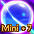
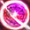
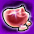
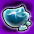

ポータル系アイテム

ポータル系アイテムとは、アイテムモールなどを通して入手可能なプレミアムアイテムです。
経験値アップ効果、場所記憶・移動などの様々な効果があります。
効果
種類
効果
各種効果・仕様について解説。
経験値アップ
・経験値アップ効果は最終経験値に乗る・通常パワキ補正を乗せると+100%(経験値3倍)
・転生パワキを使うと+200%(経験値4倍)
・ネカフェ補正を乗せると+50%(おおよそ1.33倍程度)
・モンスター討伐・クエスト・秘密ダンジョンなどの経験値に対して有効
・経験値スクロールやレイドは経験値固定
場所記憶機能
・特殊ダンジョン・エリアを除く各場所を記憶可能・移動には戦闘終了から10秒の待機時間が必要
・一部秘密ダンジョンや特殊ダンジョンではマップ移動機能を利用不可
・別のスフィアを使っても記憶箇所情報は継続可能
・ムーンストーンと記憶箇所情報は引き継がれます
プレミアムゾーン
・スフィア所持時に[P]がついたエリアに入場できるようになります。・入場中にスフィアの有効期限が切れた場合、強制的に追い出されます。
・決闘鯖で決闘を行うのにもこの機能が必要です
街への帰還・移動
・最後に移動した街に戻れます・移動には戦闘終了から10秒の待機時間が必要
・一部エリアでは利用不可、街中や地下界など。
テレポーター無料利用
・ミラーテレポーター、各種テレポーターで必要になるゴールドが無料になります。カーペット召喚
・ダンジョン内でもカーペットを出せます。・秘密ダンジョンやギルドダンジョンなどではカーペット召喚不可。
・[Y]キーを押すことでカーペットの乗り降りが可能
・召喚されるのは通常カーペット。座る[C]や敵に攻撃するとカーペットから降ります。
・移動速度オプションや補正の恩恵が通常の3倍得られます。
・1frameに1座標距離が最速
1frameに進む座標距離は以下で計算可能。
走りの場合： { 0.0025 * [ 移動速度(%) ] + 0.25 }
絨毯の場合： { 0.0075 * [ 移動速度(%) ] + 0.75 }
ＧＶの場合： { 0.0005 * [ 移動速度(%) ] + 0.2 }

エリアボス入場
・エリアボスで入場必要な証を消費せずに入場できます。・証を所持している場合、インベの配置に依らずスフィア効果が優先されます。
・1日のクリア回数はスフィア効果を使っても全エリアボスの中から1箇所まで。
協会支援
・各町に点在する協会魔法師と同じ協会支援と同じ効果が得られます。ガイドシステム
・ガイドシステムで必要になる風の羽を消費せずに利用可能。・風の羽を所持している場合、インベの配置に依らずスフィア効果が優先されます。
・スフィアを所持している間は何度でも利用可能。

デスぺナ無し
・※ULT系スフィア限定機能・死亡時に発生するデスペナルティをレベル問わず無効化できます。
・ペットに対する経験値ペナルティは通常通り？
IF強化成功率アップ
・※コスミック・ポータルスフィア限定機能・成功確率が1.5～2倍程度上昇します。
・IFULTを強化する場合[極]が生成される確率が上昇します。
その他
・金鯖でも通常鯖のスフィアを利用可能(2020.7現在)・ゲーム内で入手可能な一部のスフィア・パワキは銀行取引不可。
（≒キャラ間の受け渡し不可）
・ゲーム内で入手可能な一部のスフィアはアイテム破壊をすると元に戻せないことがあります。
・ポータル・パワーキット系のアイテムは破壊すると元に戻せません
・パワキは同時に複数取り出せません。スフィアについても同様。(スフィアのかけら含む)
・破壊機能を逆手にとって、半端な時間のパワキを破壊→有効期限を1~3時間延長することも可能
・買い物かごより出したスフィアは有効期限内であれば同一アカウント上の別鯖でも利用可能
※同じスフィアを取り出すことで複数キャラでの所持が可能。
種類
利用ユーザが多いアイテムを中心に解説します。
GEMは通常価格での値段で、キャンペーン等で割引されて入手することもできます。
| アイテム名 | GEM | 効果 | |
|---|---|---|---|
| スフィア系アイテム | |||
| ポータル・スフィアー |  |
2500 | ・有効期限30日 ・経験値＆アイテムドロップ率２倍 ・３か所記憶可能 ・プレミアムゾーン入場可能 ・街への帰還 ・街を選択して移動可能(2万Gold消費) ・テレポーター(ミラー含む)無料利用 ・無料カーペット召喚(Yキーで一部狩場でも可能) ・エリアボス討伐許可証消費無しで入場 ・協会支援バフ効果付与(マナに願う) ・ガイドシステムからおすすめの狩場、秘密ダンジョン、コンテンツに無料移動 |
| ポータル・スフィアー [１日版] |
 |
？ | ・有効期限1日 ・以下ポータルスフィアと同様 |
| ポータル・スフィアー [３日版] |
 |
？ | ・有効期限3日 ・以下ポータルスフィアと同様 |
| ポータル・スフィアー [７日版] |
 | ？ | ・有効期限7日 ・以下ポータルスフィアと同様 |
| ポータル・スフィアー [１０日版] |
？ | ・有効期限10日 ・以下ポータルスフィアと同様 |
|
| ポータル・スフィアー [１４日版] |
 |
？ | ・有効期限14日 ・以下ポータルスフィアと同様 |
| ポータル・スフィアーＤＸ | |
2700 | ・有効期限30日 ・経験値＆アイテムドロップ率２倍 ・４か所記憶可能 ・プレミアムゾーン入場可能 ・街への帰還 ・街を選択して移動可能(2万Gold消費) ・テレポーター(ミラー含む)無料利用 ・無料カーペット召喚(Yキーで一部狩場でも可能) ・エリアボス討伐許可証消費無しで入場 ・協会支援バフ効果付与(マナに願う) ・ガイドシステムからおすすめの狩場、秘密ダンジョン、コンテンツに無料移動 |
| ポータル・スフィアーＵＬＴ |  |
3000 | ・有効期限30日 ・経験値＆アイテムドロップ率２倍 ・３か所記憶可能 ・デスペナルティ無し ・プレミアムゾーン入場可能 ・街への帰還 ・街を選択して移動可能(2万Gold消費) ・テレポーター(ミラー含む)無料利用 ・無料カーペット召喚(Yキーで一部狩場でも可能) ・エリアボス討伐許可証消費無しで入場 ・協会支援バフ効果付与(マナに願う) ・ガイドシステムからおすすめの狩場、秘密ダンジョン、コンテンツに無料移動 |
| ポータル・スフィアーＵＬＴ [１４日版] |
？ | ・有効期限14日 ・その他はコスミック・ポータルスフィアと同様 |
|
| ポータル・スフィアーＵＬＴ [７日版] |
 |
？ | ・有効期限7日 ・その他はコスミック・ポータルスフィアと同様 |
| ポータル・スフィアーＵＬＴ [１日版] |
？ | ・有効期限1日 ・その他はコスミック・ポータルスフィアと同様 |
|
| ゲートグローブ | 2900 | ・有効期限30日 ・経験値＆アイテムドロップ率２倍 ・３か所記憶可能 ・ワールドマップ上でフィールド移動可能 （移動後、3分間のクールタイム有） ・プレミアムゾーン入場可能 ・街への帰還 ・街を選択して移動可能(2万Gold消費) ・テレポーター(ミラー含む)無料利用 ・無料カーペット召喚(Yキーで一部狩場でも可能) ・エリアボス討伐許可証消費無しで入場 ・協会支援バフ効果付与(マナに願う) ・ガイドシステムからおすすめの狩場、秘密ダンジョン、コンテンツに無料移動 |
|
| コスミック・ポータル・スフィアー [１４日版] |
2100 | ・有効期限14日 ・ギルドダンジョン入場制限回数が1日3回に上昇。(1回増加) ・インフィニティ武器強化成功確率上昇 ・ギルドダンジョン獲得アイテム上昇 ・ギルドホールランクに関係なく、各階のギルドダンジョン入場券なしで入場可能 ・クリーチャー冒険にて特殊層に入場可能 ・その他はポータルスフィアと同様 |
|
| コスミック・ポータル・スフィアー [７日版] |
1300 | ・有効期限7日 ・その他はコスミック・ポータルスフィアと同様 |
|
| コスミック・ポータル・スフィアー [１日版] |
 |
？ | ・有効期限1日 ・その他はコスミック・ポータルスフィアと同様 |
| ミニスフィア系アイテム | |||
| ミニポータル・スフィアー |  |
400 | ・有効期限3日 ・経験値+100% ・アイテムドロップ率＋65% ・記憶機能無し ・プレミアムゾーン入場可能 ・街への帰還 ・テレポーター(ミラー含む)無料利用 ・テレポーターにてカーペット召喚可能 ・ガイドシステムからおすすめの狩場、秘密ダンジョン、コンテンツに無料移動 |
| ミニポータル・オーブ | 200 | ・有効期限3日 ・経験値+50% ・アイテムドロップ率＋30% ・その他はミニポータルスフィアと同様 |
|
| ミニポータル・ジェム |  |
100 | ・有効期限3日 ・経験値+20% ・アイテムドロップ率増加無し ・その他はミニポータルスフィアと同様 |
| ポータル・オーブ | 1500 | ・有効期限30日 ・経験値+50% ・アイテムドロップ率＋50% ・その他はミニポータルスフィアと同様 |
|
| ポータル・ジェム |  |
750 | ・有効期限30日 ・経験値+20% ・アイテムドロップ率＋20% ・その他はミニポータルスフィアと同様 |
| ミニポータル・スフィアーPlus |  |
700 | ・有効期限3日 ・ギルドダンジョン入場制限回数が1日3回に上昇。(1回増加) ・インフィニティ武器強化成功確率上昇 ・ギルドダンジョン獲得アイテム上昇 ・ギルドホールランクに関係なく、各階のギルドダンジョン入場券なしで入場可能 ・その他はミニポータルスフィアと同様 |
| パワキ系アイテム | |||
| ポータル・パワーキット [1時間版] |
|
400pt | ・有効期限1時間 ・経験値アップ効果＋100%(2倍→3倍) ・ゲートグローブ取り出し時、取り出し不可 |
| ポータル・パワーキット [3時間版] |
|
600pt | ・有効期限3時間 ・経験値アップ効果＋100%(2倍→3倍) ・ゲートグローブ取り出し時、取り出し不可 |
| ポータル・パワーキットDX [1日] |
 |
- | ・有効期限24時間 ・経験値アップ効果＋100%(2倍→3倍) ・復帰者ログインボーナスとして入手可能 |
| 1次転生パワーキットULT [3時間版] |
 | 500 | ・有効期限3時間 ・経験値アップ効果＋100%(2倍→4倍) ・1次転生899Lv以下のみ利用可能 ・ゲートグローブ取り出し時、取り出し不可 |
| 2次転生パワーキットULT [3時間版] |
500 | ・有効期限3時間 ・経験値アップ効果＋100%(2倍→4倍) ・2次転生899Lv以下のみ利用可能 ・ゲートグローブ取り出し時、取り出し不可 |
|
| 3次転生パワーキットULT [3時間版] |
500 | ・有効期限3時間 ・経験値アップ効果＋100%(2倍→4倍) ・3次転生899Lv以下のみ利用可能 ・ゲートグローブ取り出し時、取り出し不可 |
|
| スフィアーのかけら | |||
| スフィアーのかけら「記憶」 |  | - | ・有効期限1時間 or 3時間 ・場所4か所記憶 |
| スフィアーのかけら「経験値」 |  |
- | ・有効期限1時間 or 3時間 ・経験値+100% |
| スフィアーのかけら「アイテム発見」 | - | ・有効期限1時間 or 3時間 ・アイテムドロップ率+100% |
|
| スフィアーのかけら「鍵」 |  | ？ | ・有効期限14日 or 30日 ・プレミアムゾーンに進入可能 ・決戦鯖に入場可能 ・[参考] |
備考
・かつてレベリング回避目的からポータルスフィアから経験値100%効果を除いたポータルスフィアEX(2500GEM)が販売されていました。※現在は存在しません。
・金鯖専用アイテムは通常鯖よりも割安でスフィアやパワキを利用可能。